制定日期：2026-11-19
适用对象：21 岁女性，在校大学生，164 cm / 67 kg
说明：本方案基于公开循证资料与已知信息制定，不替代医生诊断。出现"红旗信号"（见第 11 节）请先就医。
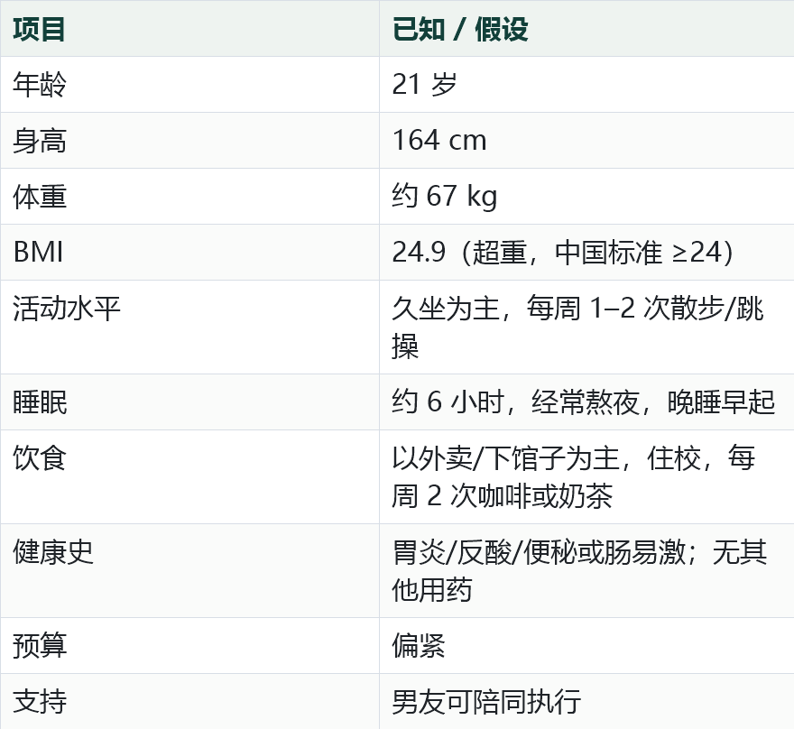
| 项目 | 已知 / 假设 |
|---|---|
| 年龄 | 21 岁 |
| 身高 | 164 cm |
| 体重 | 约 67 kg |
| BMI | 24.9（超重，中国标准 ≥24） |
| 活动水平 | 久坐为主，每周 1–2 次散步/跳操 |
| 睡眠 | 约 6 小时，经常熬夜，晚睡早起 |
| 饮食 | 以外卖/下馆子为主，住校，每周 2 次咖啡或奶茶 |
| 健康史 | 胃炎/反酸/便秘或肠易激；无其他用药 |
| 预算 | 偏紧 |
| 支持 | 男友可陪同执行 |
热量估算（Mifflin-St Jeor）
这是按当前体重 67 kg 算的。体重每下降 5 kg，基础代谢大约降 50 kcal，到时候按同样公式重算一次，不必每次微调。
估算误差 ±100 kcal 很正常。真正的校准靠第 7 节的监测数据——执行两周后看体重均值走势，再决定加减 100 kcal，不要一上来就精确到个位数。另外，用 67 kg 而不是目标体重算蛋白，是为了在减脂期尽量保住肌肉；这一点比"算得准"更重要。
按中国成人标准（WS/T 428-2013），BMI 18.5–23.9 为正常，24.0–27.9 为超重，≥28.0 为肥胖。164 cm、67 kg，BMI = 24.9，属于超重。
这里要更正我上一版的判断：此前按 60 kg 估算（BMI 22.0），结论是"不在医学减重范围"；实际 67 kg 让 BMI 跨过了 24 这条线，7 kg 的差距足以改变整个定性。减重这次是有明确医学依据的，不是单纯的外形诉求。
但"有依据"不等于"越瘦越好"，边界在三个地方：
所以本方案对"一个月见效"的定义是：体重下降 2.5–3.5 kg、腰围下降 3–5 cm、浮肿消退、精力变好，其中第一周的水分下降不算成绩。
约束一：胃肠问题（胃炎/反酸/便秘或肠易激）
这一条直接排除了四种流行做法：
约束二：睡眠 6 小时且熬夜
这是全方案里性价比最高的一项。同样热量缺口下，睡眠受限的人减掉的脂肪更少、瘦体重流失更多，饥饿感和对高热量食物的渴望更强。换句话说，她如果只改一件事，应该改睡眠，而不是戒奶茶。
约束三：住校 + 外卖为主 + 预算紧
任何需要"每天自己煎鸡胸、备五个餐盒"的方案，对她都是不可执行的。方案必须在"点外卖、吃食堂"这个前提下成立，否则写得再科学也是废纸。
约束四：体重焦虑 + 每天称重 + 怕反弹 + 被说过胖
这四条放在一起是风险组合，不是动力组合。
目标分三层，行为目标优先于结果目标——因为行为可控，结果不可控，而不可控的目标会制造焦虑。
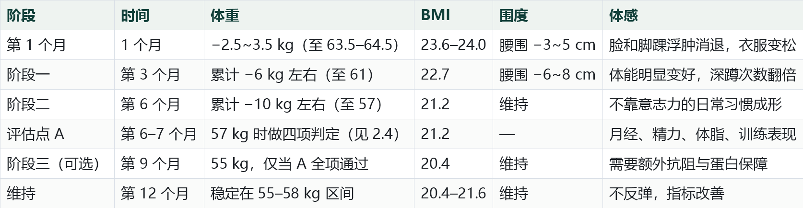
| 阶段 | 时间 | 体重 | BMI | 围度 | 体感 |
|---|---|---|---|---|---|
| 第 1 个月 | 1 个月 | −2.5~3.5 kg（至 63.5–64.5） | 23.6–24.0 | 腰围 −3~5 cm | 脸和脚踝浮肿消退，衣服变松 |
| 阶段一 | 第 3 个月 | 累计 −6 kg 左右（至 61） | 22.7 | 腰围 −6~8 cm | 体能明显变好，深蹲次数翻倍 |
| 阶段二 | 第 6 个月 | 累计 −10 kg 左右（至 57） | 21.2 | 维持 | 不靠意志力的日常习惯成形 |
| 评估点 A | 第 6–7 个月 | 57 kg 时做四项判定（见 2.4） | 21.2 | — | 月经、精力、体脂、训练表现 |
| 阶段三（可选） | 第 9 个月 | 55 kg，仅当 A 全项通过 | 20.4 | 维持 | 需要额外抗阻与蛋白保障 |
| 维持 | 第 12 个月 | 稳定在 55–58 kg 区间 | 20.4–21.6 | 维持 | 不反弹，指标改善 |
50 kg（100 斤）不在上表的时间轴上。 它是一个需要单独评估的选项，理由见 2.4。
考核规则：一周内行为目标完成 ≥4 项，就算这周成功，不管体重怎么变。这条要写下来贴在桌上，因为它是对抗"秤上没动就放弃"的唯一有效办法。
先看数字：164 cm 下 100 斤 = 50 kg = BMI 18.6。公共卫生上，18.5 是"低于此算体重过低"的界线，不是"健康目标线"——她要停在离这条线 0.1 的地方。
再说距离：从 67 kg 到 50 kg 是 −17 kg、−25% 体重。按每周 0.4–0.6 kg 的可持续速度，需要 8–12 个月，而且最后 3 kg 会明显变慢。任何声称一个月到 100 斤的方案，掉的一定是水和肌肉。
三档代价（按发生概率排序）：
最关键的一点：50 kg 不等于"更瘦的样子"。同样 164 cm，57 kg 但有肌肉的人，通常比 50 kg 但肌肉少的人看起来更紧、腰更细、体态更好。她想要的如果是"穿衣显瘦"，把体重停在 55–57 并练起来，比饿到 50 更可能达到。
所以本方案怎么处理：
如果她坚持要 50 kg，不是不能走，但不能按"越快越好"走：
按这个走，67 → 50 大概要 10–14 个月。这是这条路线的真实价格，写在这里，免得后面觉得"怎么这么慢"。
我会在什么条件下改口：如果测出来她体脂率确实偏高、骨架偏小，且低体重下月经和精力依然正常，那 50 kg 对她的风险比我估计的低，可以谈。但没有这些数据之前，我不建议把它写成目标。
这一节的设计前提是：不称重、不计算卡路里、不做特殊备餐。她每天在食堂和外卖之间做选择，方案必须能在打饭窗口前 10 秒内用出来。
精确到克不是没用，而是用错了阶段。份量法（手掌、餐盘）的误差大约 ±15–20%，对"一个月减 2.5–3.5 kg"这个目标完全够用；精确到克只在两个时候值得做：连续 3 周不掉称、或者想核对某一天的隐形热量。所以克数放在 4.12 附录，日常不用。
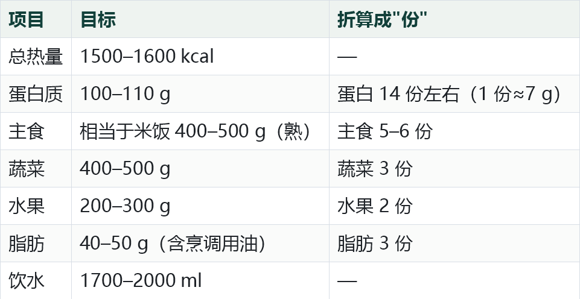
| 项目 | 目标 | 折算成"份" |
|---|---|---|
| 总热量 | 1500–1600 kcal | — |
| 蛋白质 | 100–110 g | 蛋白 14 份左右（1 份≈7 g） |
| 主食 | 相当于米饭 400–500 g（熟） | 主食 5–6 份 |
| 蔬菜 | 400–500 g | 蔬菜 3 份 |
| 水果 | 200–300 g | 水果 2 份 |
| 脂肪 | 40–50 g（含烹调用油） | 脂肪 3 份 |
| 饮水 | 1700–2000 ml | — |
这一格是给"想核对的人"看的。她不需要背这些数字，只需要记住下面四条规则。
四条都做到，热量缺口基本就成立了。剩下的细节都是优化，不是前提。
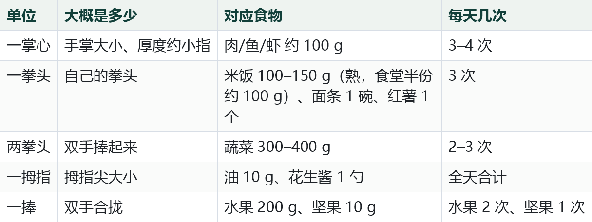
| 单位 | 大概是多少 | 对应食物 | 每天几次 |
|---|---|---|---|
| 一掌心 | 手掌大小、厚度约小指 | 肉/鱼/虾 约 100 g | 3–4 次 |
| 一拳头 | 自己的拳头 | 米饭 100–150 g（熟，食堂半份约 100 g）、面条 1 碗、红薯 1 个 | 3 次 |
| 两拳头 | 双手捧起来 | 蔬菜 300–400 g | 2–3 次 |
| 一拇指 | 拇指尖大小 | 油 10 g、花生酱 1 勺 | 全天合计 |
| 一捧 | 双手合拢 | 水果 200 g、坚果 10 g | 水果 2 次、坚果 1 次 |
餐盘法（打菜时用，比记数字快）：把餐盘想象成四格——一半放蔬菜，四分之一放蛋白，四分之一放主食。食堂的餐盘本来就是分格的，照着摆就行。
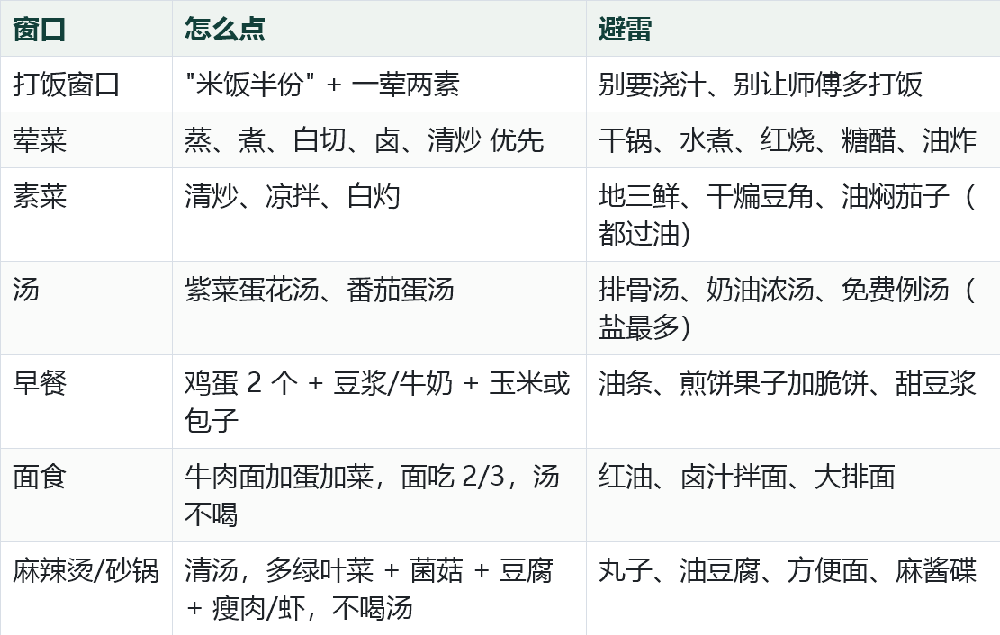
| 窗口 | 怎么点 | 避雷 |
|---|---|---|
| 打饭窗口 | "米饭半份" + 一荤两素 | 别要浇汁、别让师傅多打饭 |
| 荤菜 | 蒸、煮、白切、卤、清炒 优先 | 干锅、水煮、红烧、糖醋、油炸 |
| 素菜 | 清炒、凉拌、白灼 | 地三鲜、干煸豆角、油焖茄子（都过油） |
| 汤 | 紫菜蛋花汤、番茄蛋汤 | 排骨汤、奶油浓汤、免费例汤（盐最多） |
| 早餐 | 鸡蛋 2 个 + 豆浆/牛奶 + 玉米或包子 | 油条、煎饼果子加脆饼、甜豆浆 |
| 面食 | 牛肉面加蛋加菜，面吃 2/3，汤不喝 | 红油、卤汁拌面、大排面 |
| 麻辣烫/砂锅 | 清汤，多绿叶菜 + 菌菇 + 豆腐 + 瘦肉/虾，不喝汤 | 丸子、油豆腐、方便面、麻酱碟 |
打菜口诀（背着说）：
"米饭半份，菜少油，多给点青菜，不要浇汁。"
食堂三个最容易踩的坑：盖浇饭（汁拌饭，热量翻倍）、干锅类（油最多）、免费例汤（盐最多，直接对应第二天水肿）。避开这三个，食堂其实是最容易吃对的地方。
一个公式：1 份蛋白 + 1 份主食（要半份）+ 1 份蔬菜 + 无糖饮料
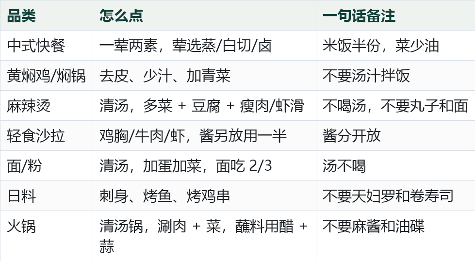
| 品类 | 怎么点 | 一句话备注 |
|---|---|---|
| 中式快餐 | 一荤两素，荤选蒸/白切/卤 | 米饭半份，菜少油 |
| 黄焖鸡/焖锅 | 去皮、少汁、加青菜 | 不要汤汁拌饭 |
| 麻辣烫 | 清汤，多菜 + 豆腐 + 瘦肉/虾滑 | 不喝汤，不要丸子和面 |
| 轻食沙拉 | 鸡胸/牛肉/虾，酱另放用一半 | 酱分开放 |
| 面/粉 | 清汤，加蛋加菜，面吃 2/3 | 汤不喝 |
| 日料 | 刺身、烤鱼、烤鸡串 | 不要天妇罗和卷寿司 |
| 火锅 | 清汤锅，涮肉 + 菜，蘸料用醋 + 蒜 | 不要麻酱和油碟 |
判断一家店能不能点：菜单里有"蒸/煮/烤/白灼"字样、能备注少油、有单独一份青菜。三个里有两个就下单。
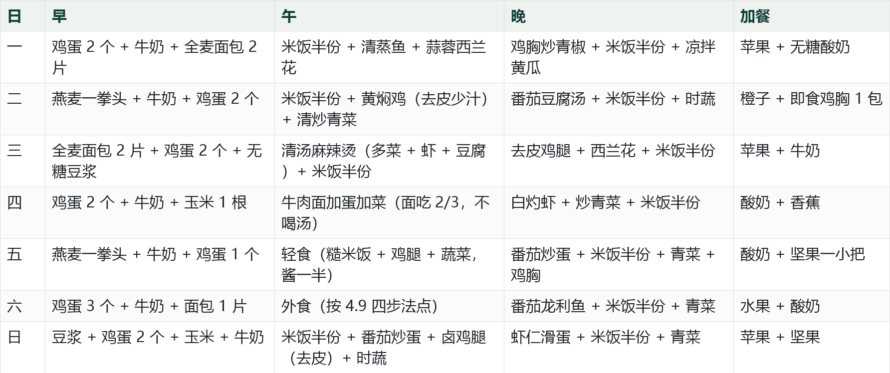
| 日 | 早 | 午 | 晚 | 加餐 |
|---|---|---|---|---|
| 一 | 鸡蛋 2 个 + 牛奶 + 全麦面包 2 片 | 米饭半份 + 清蒸鱼 + 蒜蓉西兰花 | 鸡胸炒青椒 + 米饭半份 + 凉拌黄瓜 | 苹果 + 无糖酸奶 |
| 二 | 燕麦一拳头 + 牛奶 + 鸡蛋 2 个 | 米饭半份 + 黄焖鸡（去皮少汁）+ 清炒青菜 | 番茄豆腐汤 + 米饭半份 + 时蔬 | 橙子 + 即食鸡胸 1 包 |
| 三 | 全麦面包 2 片 + 鸡蛋 2 个 + 无糖豆浆 | 清汤麻辣烫（多菜 + 虾 + 豆腐）+ 米饭半份 | 去皮鸡腿 + 西兰花 + 米饭半份 | 苹果 + 牛奶 |
| 四 | 鸡蛋 2 个 + 牛奶 + 玉米 1 根 | 牛肉面加蛋加菜（面吃 2/3，不喝汤） | 白灼虾 + 炒青菜 + 米饭半份 | 酸奶 + 香蕉 |
| 五 | 燕麦一拳头 + 牛奶 + 鸡蛋 1 个 | 轻食（糙米饭 + 鸡腿 + 蔬菜，酱一半） | 番茄炒蛋 + 米饭半份 + 青菜 + 鸡胸 | 酸奶 + 坚果一小把 |
| 六 | 鸡蛋 3 个 + 牛奶 + 面包 1 片 | 外食（按 4.9 四步法点） | 番茄龙利鱼 + 米饭半份 + 青菜 | 水果 + 酸奶 |
| 日 | 豆浆 + 鸡蛋 2 个 + 玉米 + 牛奶 | 米饭半份 + 番茄炒蛋 + 卤鸡腿（去皮）+ 时蔬 | 虾仁滑蛋 + 米饭半份 + 青菜 | 苹果 + 坚果 |
用法：不用严格对号入座，只要每天满足"早中晚各有一掌心蛋白 + 两顿有蔬菜 + 主食半份"这个骨架，吃什么可以自由替换（替换规则见 4.12）。
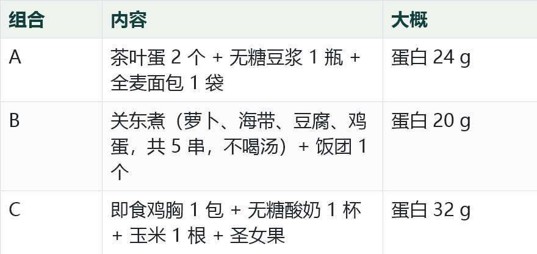
| 组合 | 内容 | 大概 |
|---|---|---|
| A | 茶叶蛋 2 个 + 无糖豆浆 1 瓶 + 全麦面包 1 袋 | 蛋白 24 g |
| B | 关东煮（萝卜、海带、豆腐、鸡蛋，共 5 串，不喝汤）+ 饭团 1 个 | 蛋白 20 g |
| C | 即食鸡胸 1 包 + 无糖酸奶 1 杯 + 玉米 1 根 + 圣女果 | 蛋白 32 g |
便利店避雷：饭团选鸡肉/三文鱼，不选沙拉酱金枪鱼；关东煮不选丸子和油豆腐；咖啡只选美式。
如果她有小电煮锅（非必需），三个 10 分钟组合：番茄龙利鱼（番茄 1 个 + 鱼片，煮 8 分钟）、一锅蒸（鸡胸 + 西兰花 + 红薯，同锅 12 分钟）、豆腐虾仁汤（6 分钟）。没锅就跳过，不影响方案成立。
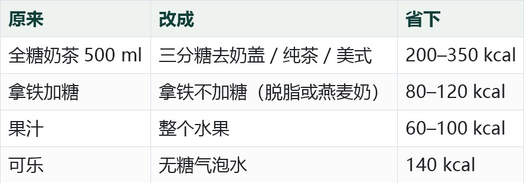
| 原来 | 改成 | 省下 |
|---|---|---|
| 全糖奶茶 500 ml | 三分糖去奶盖 / 纯茶 / 美式 | 200–350 kcal |
| 拿铁加糖 | 拿铁不加糖（脱脂或燕麦奶） | 80–120 kcal |
| 果汁 | 整个水果 | 60–100 kcal |
| 可乐 | 无糖气泡水 | 140 kcal |
两条纪律：咖啡不空腹喝（放餐后，她有反酸）；下午 2 点后不摄入咖啡因（半衰期 5–6 小时，直接毁睡眠）。代糖饮料适量即可，赤藓糖醇、山梨糖醇在肠易激人群里容易胀气。
聚餐后第二天正常吃，不要补偿性断食。补偿是"聚餐—节食—暴食"循环的入口。
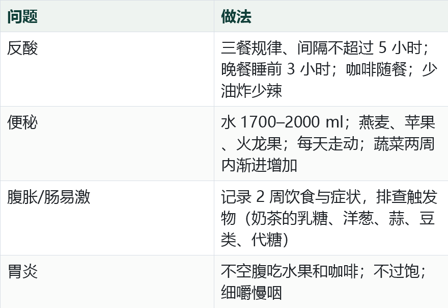
| 问题 | 做法 |
|---|---|
| 反酸 | 三餐规律、间隔不超过 5 小时；晚餐睡前 3 小时；咖啡随餐；少油炸少辣 |
| 便秘 | 水 1700–2000 ml；燕麦、苹果、火龙果；每天走动；蔬菜两周内渐进增加 |
| 腹胀/肠易激 | 记录 2 周饮食与症状，排查触发物（奶茶的乳糖、洋葱、蒜、豆类、代糖） |
| 胃炎 | 不空腹吃水果和咖啡；不过饱；细嚼慢咽 |
蔬菜一定要"渐进"。一周内从 100 g 跳到 500 g，腹胀会让她以为方案有问题，然后放弃。
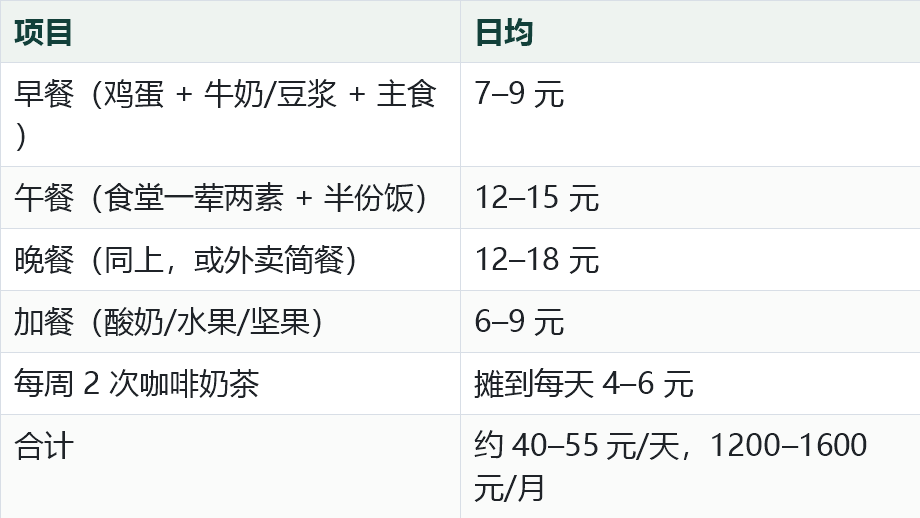
| 项目 | 日均 |
|---|---|
| 早餐（鸡蛋 + 牛奶/豆浆 + 主食） | 7–9 元 |
| 午餐（食堂一荤两素 + 半份饭） | 12–15 元 |
| 晚餐（同上，或外卖简餐） | 12–18 元 |
| 加餐（酸奶/水果/坚果） | 6–9 元 |
| 每周 2 次咖啡奶茶 | 摊到每天 4–6 元 |
| 合计 | 约 40–55 元/天，1200–1600 元/月 |
比旧模式（外卖 25–35 一餐 + 奶茶）省。一次性投入只有弹力带 20–30 元，不需要蛋白粉、代餐、任何保健品。
常见食物的"一份"大概是
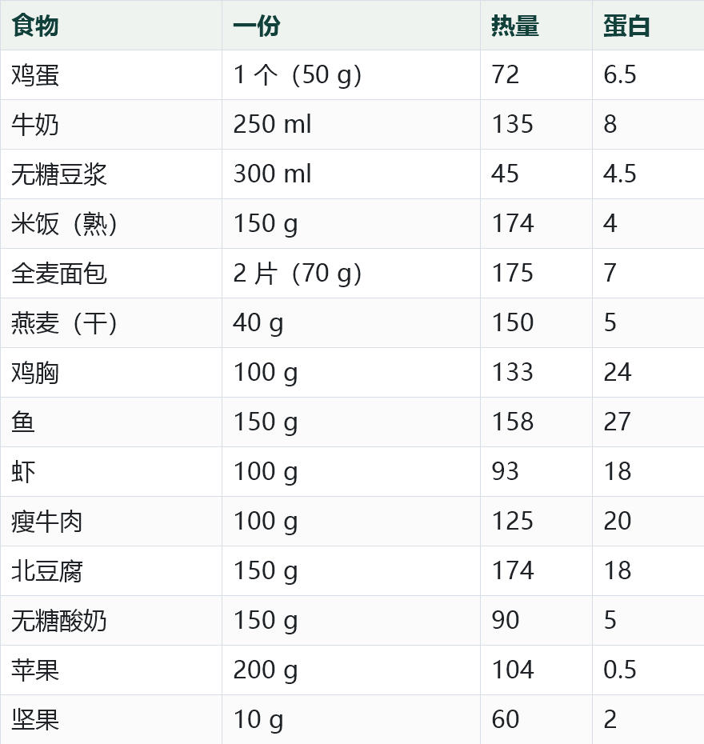
| 食物 | 一份 | 热量 | 蛋白 |
|---|---|---|---|
| 鸡蛋 | 1 个（50 g） | 72 | 6.5 |
| 牛奶 | 250 ml | 135 | 8 |
| 无糖豆浆 | 300 ml | 45 | 4.5 |
| 米饭（熟） | 150 g | 174 | 4 |
| 全麦面包 | 2 片（70 g） | 175 | 7 |
| 燕麦（干） | 40 g | 150 | 5 |
| 鸡胸 | 100 g | 133 | 24 |
| 鱼 | 150 g | 158 | 27 |
| 虾 | 100 g | 93 | 18 |
| 瘦牛肉 | 100 g | 125 | 20 |
| 北豆腐 | 150 g | 174 | 18 |
| 无糖酸奶 | 150 g | 90 | 5 |
| 苹果 | 200 g | 104 | 0.5 |
| 坚果 | 10 g | 60 | 2 |
常见外卖热量（估算）
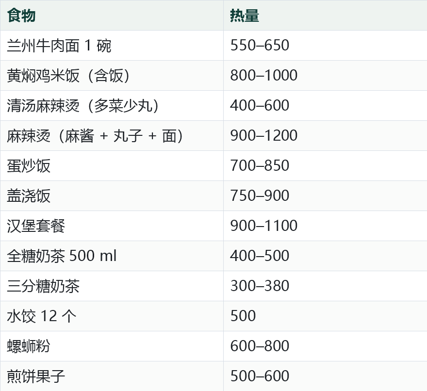
| 食物 | 热量 |
|---|---|
| 兰州牛肉面 1 碗 | 550–650 |
| 黄焖鸡米饭（含饭） | 800–1000 |
| 清汤麻辣烫（多菜少丸） | 400–600 |
| 麻辣烫（麻酱 + 丸子 + 面） | 900–1200 |
| 蛋炒饭 | 700–850 |
| 盖浇饭 | 750–900 |
| 汉堡套餐 | 900–1100 |
| 全糖奶茶 500 ml | 400–500 |
| 三分糖奶茶 | 300–380 |
| 水饺 12 个 | 500 |
| 螺蛳粉 | 600–800 |
| 煎饼果子 | 500–600 |
替换规则（同类换同类，热量差不多）
想吃零食时的替换
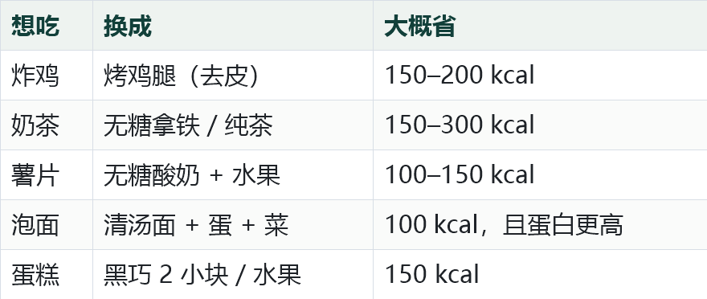
| 想吃 | 换成 | 大概省 |
|---|---|---|
| 炸鸡 | 烤鸡腿（去皮） | 150–200 kcal |
| 奶茶 | 无糖拿铁 / 纯茶 | 150–300 kcal |
| 薯片 | 无糖酸奶 + 水果 | 100–150 kcal |
| 泡面 | 清汤面 + 蛋 + 菜 | 100 kcal，且蛋白更高 |
| 蛋糕 | 黑巧 2 小块 / 水果 | 150 kcal |
只有在连续 3 周体重不动时，才需要把某一周的三餐按克称一遍核对。日常按手掌估就够。
她 BMI 24.9、又几乎不运动，体重里肌肉占比大概率偏低。只靠有氧往下压体重，掉的不只是脂肪，还容易掉肌肉，结果是"体重轻了但人看起来还是松"。抗阻训练能同时做到三件事：保住肌肉、改善体态（含肩背和臀腿线条）、提高静息代谢。有氧的作用是增加消耗和心肺，排在第二位。
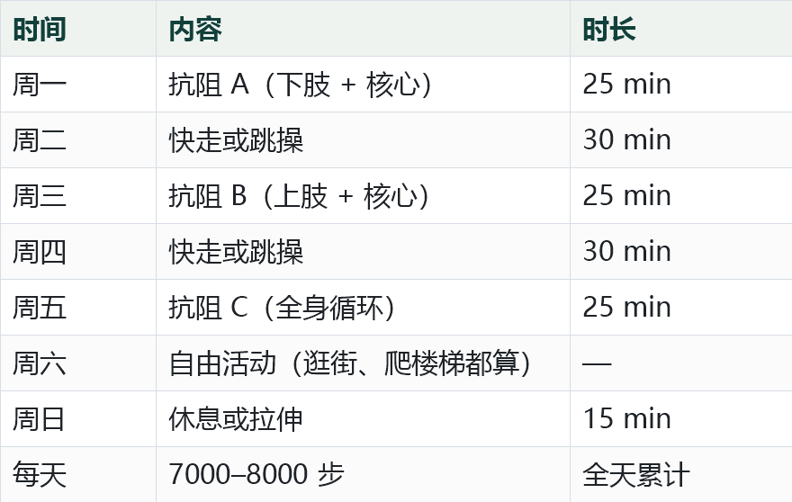
| 时间 | 内容 | 时长 |
|---|---|---|
| 周一 | 抗阻 A（下肢 + 核心） | 25 min |
| 周二 | 快走或跳操 | 30 min |
| 周三 | 抗阻 B（上肢 + 核心） | 25 min |
| 周四 | 快走或跳操 | 30 min |
| 周五 | 抗阻 C（全身循环） | 25 min |
| 周六 | 自由活动（逛街、爬楼梯都算） | — |
| 周日 | 休息或拉伸 | 15 min |
| 每天 | 7000–8000 步 | 全天累计 |
热身（每次 5 分钟，必做）：原地踏步 1 min → 肩绕环 20 次 → 髋绕环 20 次 → 猫牛式 10 次 → 徒手深蹲 10 次。
抗阻 A：下肢 + 核心
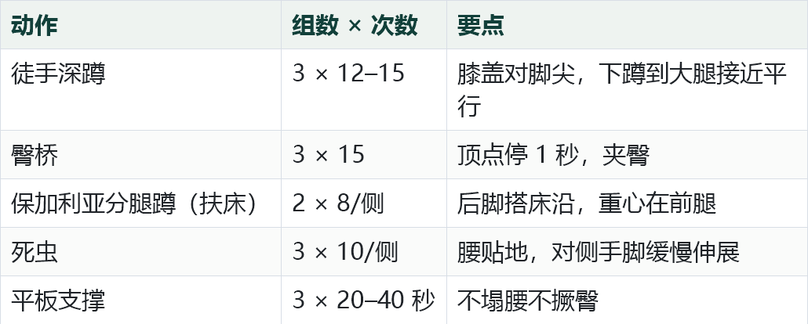
| 动作 | 组数 × 次数 | 要点 |
|---|---|---|
| 徒手深蹲 | 3 × 12–15 | 膝盖对脚尖，下蹲到大腿接近平行 |
| 臀桥 | 3 × 15 | 顶点停 1 秒，夹臀 |
| 保加利亚分腿蹲（扶床） | 2 × 8/侧 | 后脚搭床沿，重心在前腿 |
| 死虫 | 3 × 10/侧 | 腰贴地，对侧手脚缓慢伸展 |
| 平板支撑 | 3 × 20–40 秒 | 不塌腰不撅臀 |
抗阻 B：上肢 + 核心
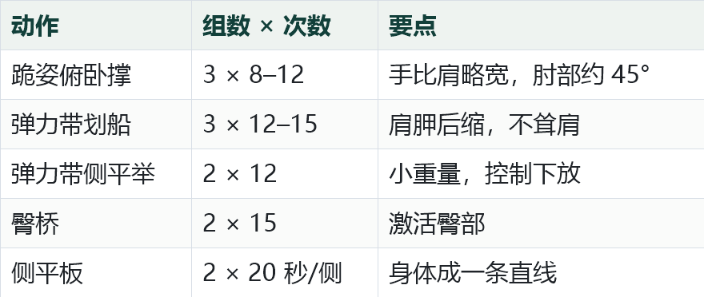
| 动作 | 组数 × 次数 | 要点 |
|---|---|---|
| 跪姿俯卧撑 | 3 × 8–12 | 手比肩略宽，肘部约 45° |
| 弹力带划船 | 3 × 12–15 | 肩胛后缩，不耸肩 |
| 弹力带侧平举 | 2 × 12 | 小重量，控制下放 |
| 臀桥 | 2 × 15 | 激活臀部 |
| 侧平板 | 2 × 20 秒/侧 | 身体成一条直线 |
抗阻 C：全身循环（3 轮，组间 60 秒）
深蹲 12 → 跪姿俯卧撑 10 → 弹力带划船 12 → 臀桥 15 → 平板支撑 30 秒
放松（5 分钟）：大腿前侧、腘绳肌、臀部、胸肩各静态拉伸 30 秒。
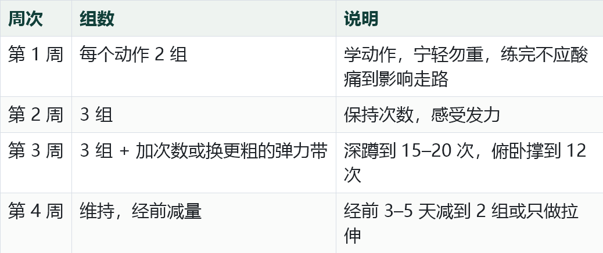
| 周次 | 组数 | 说明 |
|---|---|---|
| 第 1 周 | 每个动作 2 组 | 学动作，宁轻勿重，练完不应酸痛到影响走路 |
| 第 2 周 | 3 组 | 保持次数，感受发力 |
| 第 3 周 | 3 组 + 加次数或换更粗的弹力带 | 深蹲到 15–20 次，俯卧撑到 12 次 |
| 第 4 周 | 维持，经前减量 | 经前 3–5 天减到 2 组或只做拉伸 |
目标：第 1–2 周从 6 小时到 6.5 小时，第 3–4 周到 7 小时。
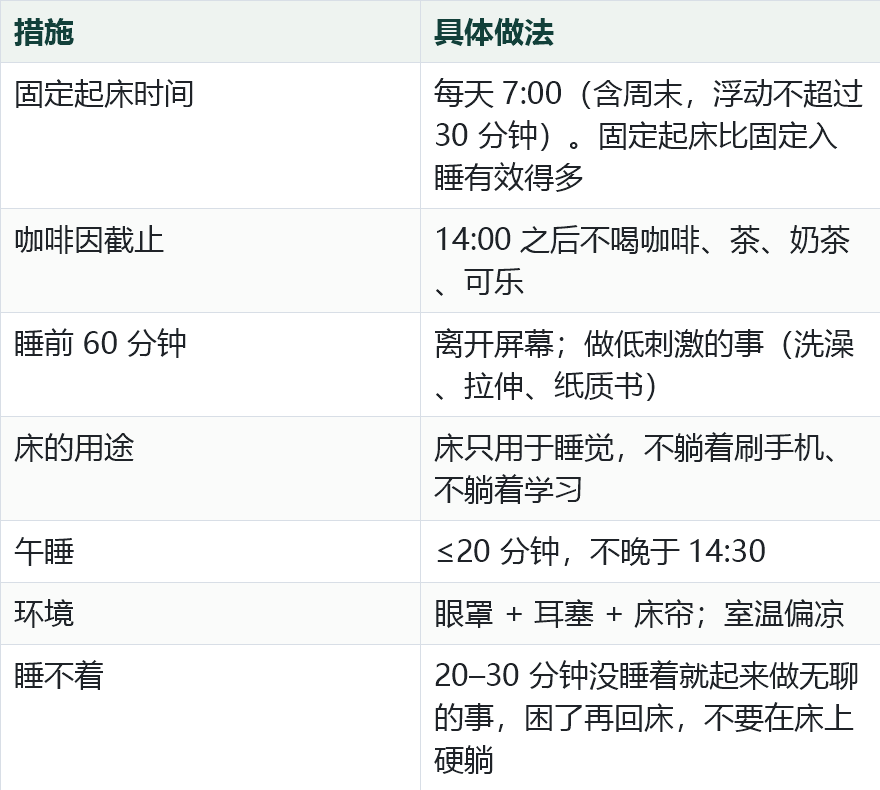
| 措施 | 具体做法 |
|---|---|
| 固定起床时间 | 每天 7:00（含周末，浮动不超过 30 分钟）。固定起床比固定入睡有效得多 |
| 咖啡因截止 | 14:00 之后不喝咖啡、茶、奶茶、可乐 |
| 睡前 60 分钟 | 离开屏幕；做低刺激的事（洗澡、拉伸、纸质书） |
| 床的用途 | 床只用于睡觉，不躺着刷手机、不躺着学习 |
| 午睡 | ≤20 分钟，不晚于 14:30 |
| 环境 | 眼罩 + 耳塞 + 床帘；室温偏凉 |
| 睡不着 | 20–30 分钟没睡着就起来做无聊的事，困了再回床，不要在床上硬躺 |
熬夜的补偿逻辑：晚睡但早起 = 净睡眠不足。不要用"周末补觉"来还债，补觉会打乱节律，周一更难起。
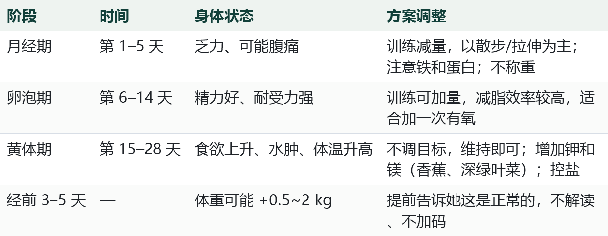
| 阶段 | 时间 | 身体状态 | 方案调整 |
|---|---|---|---|
| 月经期 | 第 1–5 天 | 乏力、可能腹痛 | 训练减量，以散步/拉伸为主；注意铁和蛋白；不称重 |
| 卵泡期 | 第 6–14 天 | 精力好、耐受力强 | 训练可加量，减脂效率较高，适合加一次有氧 |
| 黄体期 | 第 15–28 天 | 食欲上升、水肿、体温升高 | 不调目标，维持即可；增加钾和镁（香蕉、深绿叶菜）；控盐 |
| 经前 3–5 天 | — | 体重可能 +0.5~2 kg | 提前告诉她这是正常的，不解读、不加码 |
她"每天称重 + 焦虑 + 怕反弹"，这个组合下每日称重是有害的：
替代方案：每周固定 2 次（周三、周日），晨起排空后、同样穿着；只看 7 日均值，不看单日。如果她坚持每天称，可以称，但约定"只记录，不解读，不当天的情绪由它决定"。
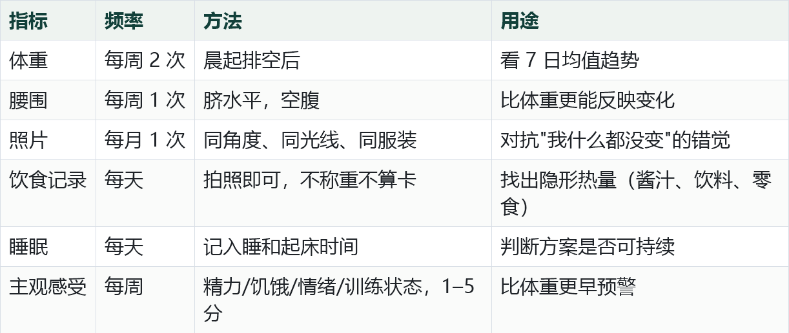
| 指标 | 频率 | 方法 | 用途 |
|---|---|---|---|
| 体重 | 每周 2 次 | 晨起排空后 | 看 7 日均值趋势 |
| 腰围 | 每周 1 次 | 脐水平，空腹 | 比体重更能反映变化 |
| 照片 | 每月 1 次 | 同角度、同光线、同服装 | 对抗"我什么都没变"的错觉 |
| 饮食记录 | 每天 | 拍照即可，不称重不算卡 | 找出隐形热量（酱汁、饮料、零食） |
| 睡眠 | 每天 | 记入睡和起床时间 | 判断方案是否可持续 |
| 主观感受 | 每周 | 精力/饥饿/情绪/训练状态，1–5 分 | 比体重更早预警 |
第 1 周不设体重目标，是刻意的。第一周掉的多半是水分，拿它当成功标准，第二周就会失望。
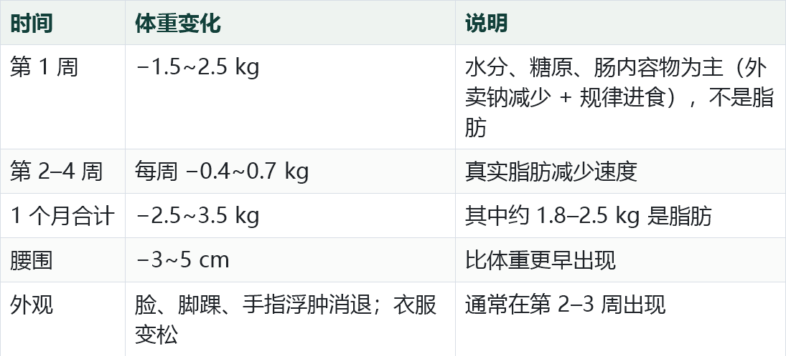
| 时间 | 体重变化 | 说明 |
|---|---|---|
| 第 1 周 | −1.5~2.5 kg | 水分、糖原、肠内容物为主（外卖钠减少 + 规律进食），不是脂肪 |
| 第 2–4 周 | 每周 −0.4~0.7 kg | 真实脂肪减少速度 |
| 1 个月合计 | −2.5~3.5 kg | 其中约 1.8–2.5 kg 是脂肪 |
| 腰围 | −3~5 cm | 比体重更早出现 |
| 外观 | 脸、脚踝、手指浮肿消退；衣服变松 | 通常在第 2–3 周出现 |
平台期是正常的，不是失败。ISSN 立场声明里有一句话值得记住：平台期也是"练习维持"的机会——最终目标本来就是维持在一个平台上。
处理顺序（从便宜到贵）：
不要做的事：一次砍 300 kcal、连续断食、加倍有氧。这些会让依从性崩掉，然后反弹更多。
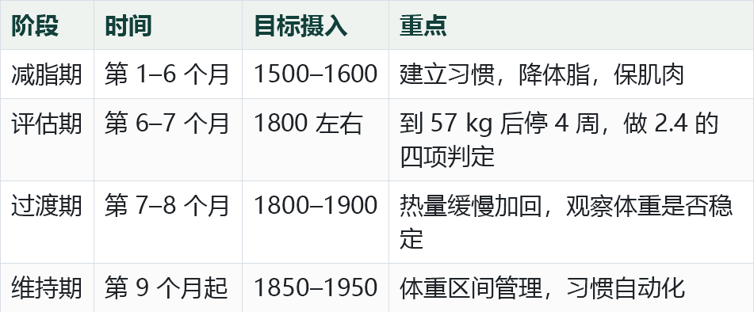
| 阶段 | 时间 | 目标摄入 | 重点 |
|---|---|---|---|
| 减脂期 | 第 1–6 个月 | 1500–1600 | 建立习惯，降体脂，保肌肉 |
| 评估期 | 第 6–7 个月 | 1800 左右 | 到 57 kg 后停 4 周，做 2.4 的四项判定 |
| 过渡期 | 第 7–8 个月 | 1800–1900 | 热量缓慢加回，观察体重是否稳定 |
| 维持期 | 第 9 个月起 | 1850–1950 | 体重区间管理，习惯自动化 |
如果评估点通过、她决定继续往 55 走，减脂期顺延到第 9 个月，维持期从第 10 个月起。
体重下降后，总消耗会跟着下降（适应性能耗确实存在，但不是必然，也不是永久的；体重稳定后会部分回弹），同时饥饿激素上升。所以维持期不是"回到从前"，而是换一套可持续的默认设置：
说明：常被引用的"成功维持体重者的共同特征"（高体力活动、规律称重、吃早餐）来自观察性登记研究，样本自报、存在选择偏倚。它能说明相关性，不能当因果。真正有因果证据的仍是：热量缺口、蛋白、抗阻、行为自我监测。
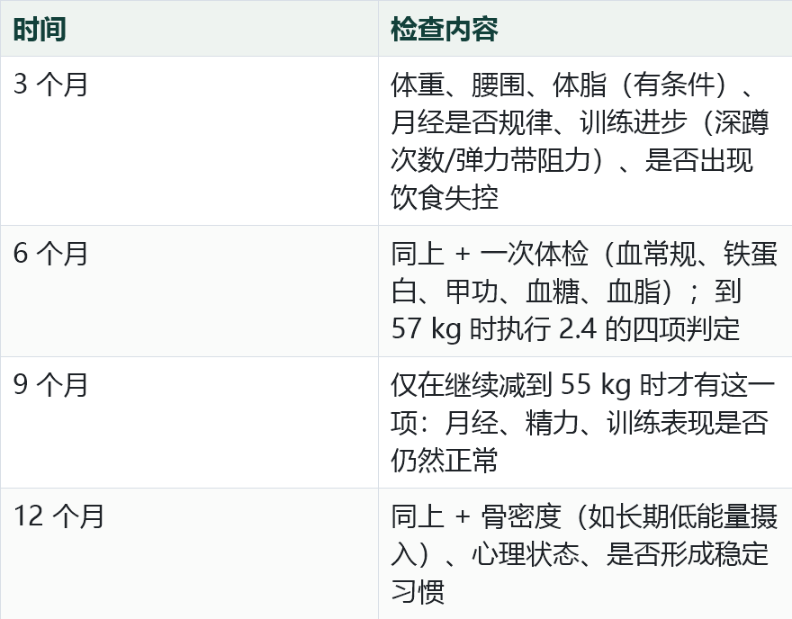
| 时间 | 检查内容 |
|---|---|
| 3 个月 | 体重、腰围、体脂（有条件）、月经是否规律、训练进步（深蹲次数/弹力带阻力）、是否出现饮食失控 |
| 6 个月 | 同上 + 一次体检（血常规、铁蛋白、甲功、血糖、血脂）；到 57 kg 时执行 2.4 的四项判定 |
| 9 个月 | 仅在继续减到 55 kg 时才有这一项：月经、精力、训练表现是否仍然正常 |
| 12 个月 | 同上 + 骨密度（如长期低能量摄入）、心理状态、是否形成稳定习惯 |
出现以下任一情况，暂停减脂，先就医：
建议的基础检查（不着急，但值得做一次）：
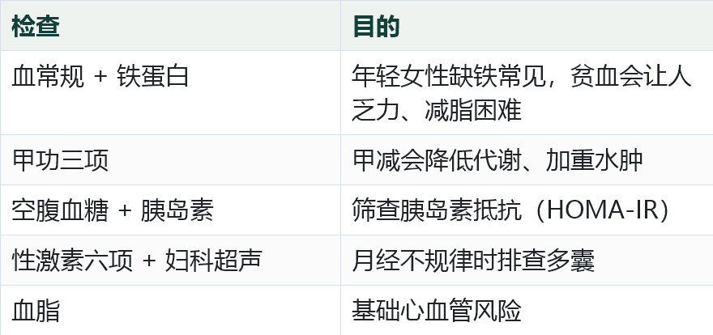
| 检查 | 目的 |
|---|---|
| 血常规 + 铁蛋白 | 年轻女性缺铁常见，贫血会让人乏力、减脂困难 |
| 甲功三项 | 甲减会降低代谢、加重水肿 |
| 空腹血糖 + 胰岛素 | 筛查胰岛素抵抗（HOMA-IR） |
| 性激素六项 + 妇科超声 | 月经不规律时排查多囊 |
| 血脂 | 基础心血管风险 |
多囊和胰岛素抵抗在年轻女性中并不罕见，而这两种情况下的减重策略需要调整（比如更重视胰岛素敏感性和抗阻训练）。查一次，是为了排除，不是为了找病。
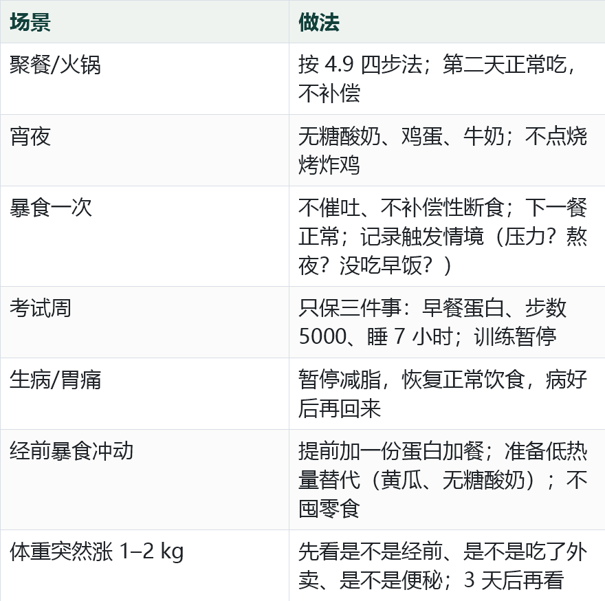
| 场景 | 做法 |
|---|---|
| 聚餐/火锅 | 按 4.9 四步法；第二天正常吃，不补偿 |
| 宵夜 | 无糖酸奶、鸡蛋、牛奶；不点烧烤炸鸡 |
| 暴食一次 | 不催吐、不补偿性断食；下一餐正常；记录触发情境（压力？熬夜？没吃早饭？） |
| 考试周 | 只保三件事：早餐蛋白、步数 5000、睡 7 小时；训练暂停 |
| 生病/胃痛 | 暂停减脂，恢复正常饮食，病好后再回来 |
| 经前暴食冲动 | 提前加一份蛋白加餐；准备低热量替代（黄瓜、无糖酸奶）；不囤零食 |
| 体重突然涨 1–2 kg | 先看是不是经前、是不是吃了外卖、是不是便秘；3 天后再看 |
你的角色是"降低她执行这件事的成本"，不是"监督她执行这件事"。
本方案为行为与营养建议，不构成医疗诊断或处方。涉及药物（包括减重药物）必须在医生指导下使用；她的 BMI 24.9 未达到国内减重药物通常要求的适应证（约 ≥27 伴合并症或 ≥30），不建议自行购买任何减肥产品。